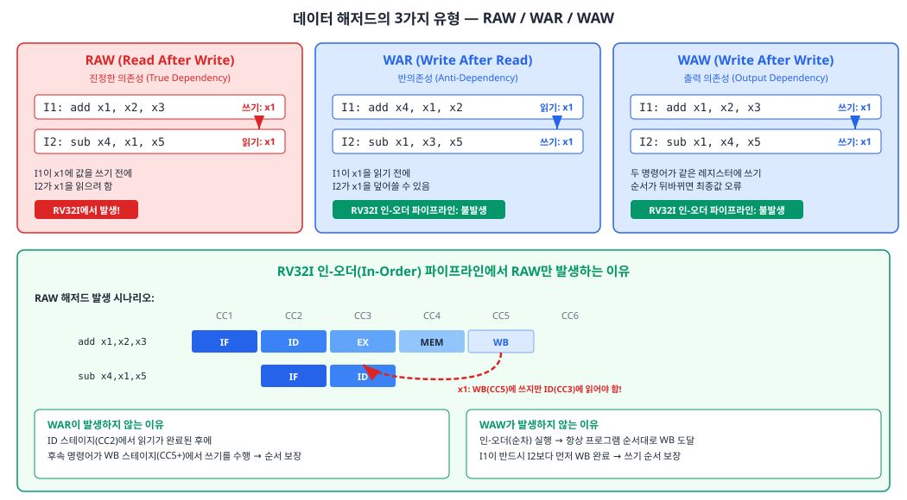
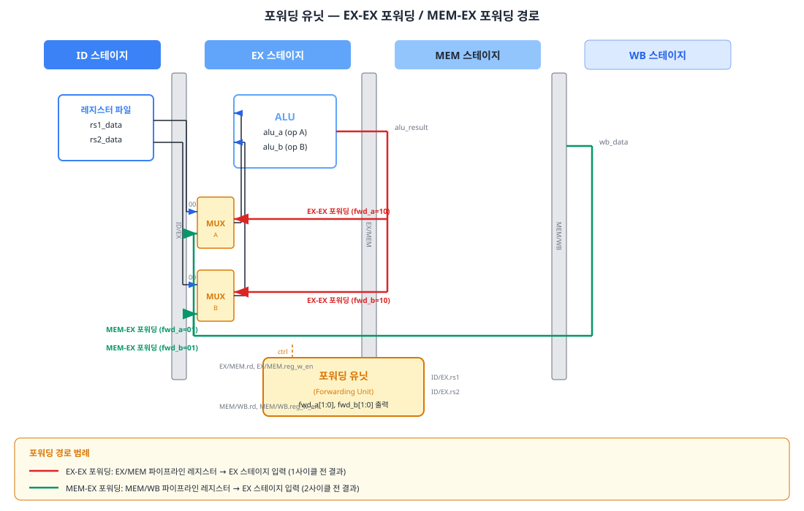
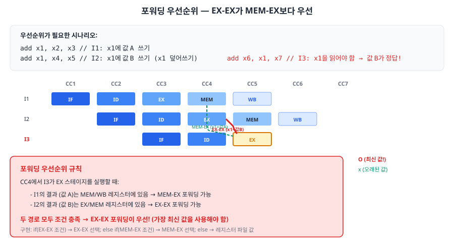
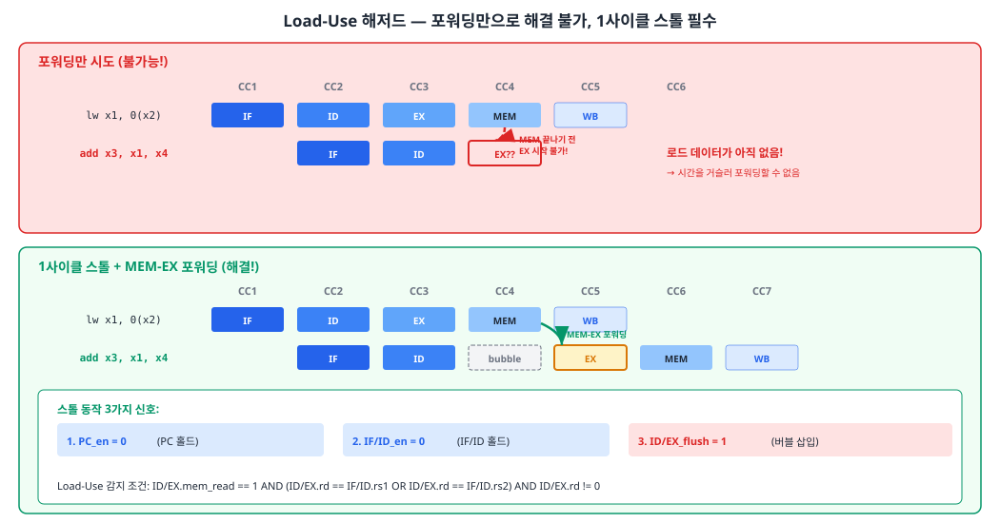
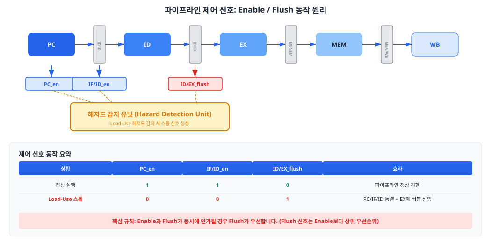
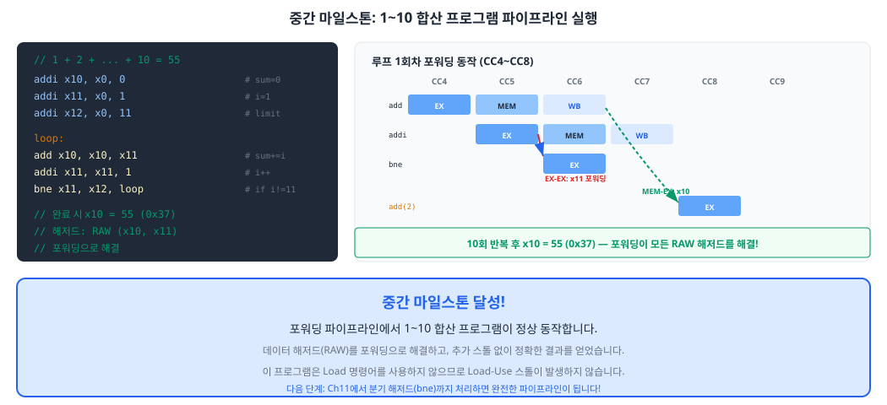

Chapter 9에서 구현한 기본 파이프라인은 명령어 간 데이터 의존성(data dependency)을 고려하지 않았습니다. 이 챕터에서는 파이프라인에서 발생하는 데이터 해저드(data hazard)의 본질을 분석하고, 포워딩(forwarding)과 스톨(stall) 메커니즘을 설계하여 정확한 프로그램 실행을 보장하는 방법을 학습합니다. 이 챕터는 교재 전체에서 가장 도전적인 구간이지만, 완료 후에는 포워딩 파이프라인에서 1부터 10까지의 합산 프로그램을 성공적으로 실행하는 중간 마일스톤을 달성하게 됩니다.
Chapter 9에서 구현한 파이프라인은 서로 독립적인 명령어가 연속되는 이상적인 경우에만 올바르게 동작합니다. 그러나 실제 프로그램에서는 명령어 사이에 데이터 의존성(data dependency)이 빈번하게 발생합니다. 한 명령어가 이전 명령어의 결과를 필요로 할 때, 그 결과가 아직 준비되지 않았다면 잘못된 값을 사용하게 됩니다. 이러한 상황을 데이터 해저드(data hazard)라고 합니다.
데이터 해저드는 두 명령어가 같은 레지스터를 사용할 때 발생하며, 읽기(Read)와 쓰기(Write)의 순서에 따라 세 가지로 분류됩니다.
| 유형 | 이름 | 의존성 방향 | 예시 | RV32I 인-오더 파이프라인 |
|---|---|---|---|---|
| RAW | Read After Write (진정한 의존성, True Dependency) |
선행 명령어의 쓰기 결과를 후행 명령어가 읽음 |
add x1,x2,x3sub x4,x1,x5 |
발생! |
| WAR | Write After Read (반의존성, Anti-Dependency) |
선행 명령어가 읽기 전에 후행 명령어가 같은 레지스터에 쓰기 |
add x4,x1,x2sub x1,x3,x5 |
미발생 |
| WAW | Write After Write (출력 의존성, Output Dependency) |
두 명령어가 같은 레지스터에 쓰기 순서가 뒤바뀜 |
add x1,x2,x3sub x1,x4,x5 |
미발생 |

왜 RV32I의 5단계 인-오더(in-order) 파이프라인에서는 WAR과 WAW가 발생하지 않을까요? 핵심은 순차 실행 순서가 보장된다는 점에 있습니다.
WAR이 발생하지 않는 이유: 레지스터 읽기는 ID 스테이지(2단계)에서, 레지스터 쓰기는 WB 스테이지(5단계)에서 수행됩니다. 선행 명령어 I1이 ID에서 레지스터를 읽는 시점은 항상 후행 명령어 I2가 WB에서 같은 레지스터에 쓰는 시점보다 앞섭니다. 따라서 I1의 읽기가 I2의 쓰기에 의해 방해받을 수 없습니다.
WAW가 발생하지 않는 이유: 인-오더 파이프라인에서는 명령어가 프로그램 순서대로 파이프라인에 진입하고, 같은 순서로 WB에 도달합니다. 따라서 I1이 반드시 I2보다 먼저 WB를 완료하므로, 쓰기 순서가 뒤바뀌는 일은 발생하지 않습니다.
그러나 RAW는 반드시 발생합니다. I1이 WB에서 결과를 쓰기 전에 I2가 ID에서 같은 레지스터를 읽으려 하면, I2는 I1의 갱신 전 값(오래된 값)을 읽게 됩니다. 이것이 바로 우리가 이 챕터에서 해결해야 할 문제입니다.
RAW 해저드의 가장 효과적인 해결 방법은 포워딩(forwarding)입니다. 데이터 바이패싱(data bypassing)이라고도 불리는 이 기법의 핵심 아이디어는 단순합니다: 결과가 파이프라인 레지스터에 이미 존재한다면, 레지스터 파일에 쓰여질 때까지 기다리지 말고 바로 사용하자.
5단계 파이프라인에서 RAW 해저드가 발생하는 두 가지 시나리오에 대응하는 두 가지 포워딩 경로가 있습니다.
| 포워딩 유형 | 소스 | 목적지 | 시나리오 | 포워딩 데이터 출처 |
|---|---|---|---|---|
| EX-EX 포워딩 | EX/MEM 파이프라인 레지스터 | EX 스테이지 입력 | 1사이클 전 명령어의 ALU 결과가 필요 | ex_mem_alu_result |
| MEM-EX 포워딩 | MEM/WB 파이프라인 레지스터 | EX 스테이지 입력 | 2사이클 전 명령어의 결과가 필요 | wb_data (ALU 결과 또는 메모리 읽기 데이터) |

포워딩 유닛은 순수 조합 로직(combinational logic)으로 구현됩니다. 이 유닛은 파이프라인 레지스터에 저장된 레지스터 번호(rd, rs1, rs2)와 제어 신호(reg_w_en)를 비교하여 포워딩 MUX의 선택 신호를 생성합니다.
EX-EX 포워딩 조건 (1사이클 전 명령어의 결과를 사용):
// EX-EX 포워딩 조건 (오퍼랜드 A 기준)
if (ex_mem_reg_w_en // 1사이클 전 명령어가 레지스터에 쓰기를 하고
&& (ex_mem_rd != 5'b0) // 그 목적지가 x0이 아니며 (x0 포워딩 방지!)
&& (ex_mem_rd == id_ex_rs1)) // 현재 명령어의 rs1과 일치하면
begin
fwd_a = 2'b10; // EX/MEM 레지스터에서 포워딩
end
MEM-EX 포워딩 조건 (2사이클 전 명령어의 결과를 사용):
// MEM-EX 포워딩 조건 (오퍼랜드 A 기준)
// EX-EX 포워딩이 적용되지 않을 때만 확인 (우선순위)
else if (mem_wb_reg_w_en // 2사이클 전 명령어가 레지스터에 쓰기를 하고
&& (mem_wb_rd != 5'b0) // 그 목적지가 x0이 아니며
&& (mem_wb_rd == id_ex_rs1)) // 현재 명령어의 rs1과 일치하면
begin
fwd_a = 2'b01; // MEM/WB 레지스터에서 포워딩
end
동일한 레지스터에 대해 EX-EX 포워딩과 MEM-EX 포워딩이 동시에 성립하는 경우가 있습니다. 다음 코드를 살펴보십시오:
// 포워딩 우선순위가 필요한 시나리오
add x1, x2, x3 // I1: x1에 값 A 쓰기
add x1, x4, x5 // I2: x1에 값 B 쓰기 (x1을 덮어씀)
sub x6, x1, x7 // I3: x1을 읽어야 함 → 값 B가 정답!
I3가 EX 스테이지에 있을 때, I1의 결과(값 A)는 MEM/WB 레지스터에, I2의 결과(값 B)는 EX/MEM 레지스터에 있습니다.
두 경로 모두 포워딩 조건을 충족하지만, 프로그램 순서상 가장 최근에 x1에 쓴 것은 I2이므로
EX-EX 포워딩(값 B)이 우선되어야 합니다.

이 우선순위는 구현에서 자연스럽게 보장됩니다. if-else if 구조에서 EX-EX 조건을 먼저 검사하면,
EX-EX가 성립할 때 MEM-EX는 검사하지 않습니다.
두 오퍼랜드(A, B)에 대해 독립적으로 포워딩 조건을 판단하는 전체 포워딩 유닛의 코드입니다.
module forwarding_unit (
input logic [4:0] id_ex_rs1, // 현재 명령어의 rs1
input logic [4:0] id_ex_rs2, // 현재 명령어의 rs2
input logic ex_mem_reg_w_en, // 1사이클 전: 레지스터 쓰기 인에이블
input logic [4:0] ex_mem_rd, // 1사이클 전: 목적지 레지스터
input logic mem_wb_reg_w_en, // 2사이클 전: 레지스터 쓰기 인에이블
input logic [4:0] mem_wb_rd, // 2사이클 전: 목적지 레지스터
output logic [1:0] fwd_a, // ALU 오퍼랜드 A 선택
output logic [1:0] fwd_b // ALU 오퍼랜드 B 선택
);
// fwd 값: 2'b00=레지스터파일, 2'b10=EX-EX, 2'b01=MEM-EX
// 오퍼랜드 A 포워딩
always_comb begin
fwd_a = 2'b00;
if (ex_mem_reg_w_en && (ex_mem_rd != 5'b0) &&
(ex_mem_rd == id_ex_rs1))
fwd_a = 2'b10; // EX-EX 우선
else if (mem_wb_reg_w_en && (mem_wb_rd != 5'b0) &&
(mem_wb_rd == id_ex_rs1))
fwd_a = 2'b01; // MEM-EX 차순위
end
// 오퍼랜드 B 포워딩
always_comb begin
fwd_b = 2'b00;
if (ex_mem_reg_w_en && (ex_mem_rd != 5'b0) &&
(ex_mem_rd == id_ex_rs2))
fwd_b = 2'b10;
else if (mem_wb_reg_w_en && (mem_wb_rd != 5'b0) &&
(mem_wb_rd == id_ex_rs2))
fwd_b = 2'b01;
end
endmodule
포워딩으로 대부분의 RAW 해저드를 해결할 수 있지만, 한 가지 예외가 있습니다.
Load-Use 해저드는 Load 명령어(lw, lh, lb 등)의 결과를
바로 다음 명령어에서 사용할 때 발생하며, 포워딩만으로는 해결할 수 없습니다.
이 해저드를 해결하려면 반드시 1사이클 스톨(stall)이 필요합니다.
일반 ALU 명령어(예: add)는 EX 스테이지 끝에서 결과가 확정됩니다.
따라서 바로 다음 명령어가 EX 스테이지에 진입할 때 EX-EX 포워딩으로 결과를 전달할 수 있습니다.
그러나 Load 명령어는 MEM 스테이지에서 메모리를 읽어야 결과가 확정됩니다. 바로 다음 명령어가 EX 스테이지에 진입하는 시점(CC3)에 Load 데이터는 아직 MEM 스테이지(CC4)에서 읽히기 전입니다. 시간을 거슬러 데이터를 포워딩할 수는 없으므로, 1사이클을 기다려야 합니다.

해저드 감지 유닛(Hazard Detection Unit)은 ID 스테이지에서 동작하며, 다음 조건을 검사합니다:
// Load-Use 해저드 감지 조건
load_use_hazard = id_ex_mem_read // EX 스테이지에 Load 명령어가 있고
&& (id_ex_rd != 5'b0) // Load 목적지가 x0이 아니며
&& ((id_ex_rd == if_id_rs1) // ID 스테이지 명령어의 rs1과 일치
|| (id_ex_rd == if_id_rs2)); // 또는 rs2와 일치
Load-Use 해저드가 감지되면, 해저드 감지 유닛은 다음 세 가지 신호를 동시에 생성합니다:
PC_en = 0: PC 레지스터를 홀드합니다. 같은 명령어 주소를 유지하여 다음 사이클에 같은 명령어를 인출합니다.IF/ID_en = 0: IF/ID 파이프라인 레지스터를 홀드합니다. ID 스테이지의 명령어가 다시 한번 해독됩니다.ID/EX_flush = 1: ID/EX 파이프라인 레지스터에 버블(NOP)을 삽입합니다. EX 스테이지에서 아무 작업도 수행하지 않습니다.
module hazard_detection_unit (
input logic id_ex_mem_read, // EX 스테이지의 Load 여부
input logic [4:0] id_ex_rd, // EX 스테이지의 목적지 레지스터
input logic [4:0] if_id_rs1, // ID 스테이지의 소스 레지스터 1
input logic [4:0] if_id_rs2, // ID 스테이지의 소스 레지스터 2
output logic pc_en, // PC 인에이블
output logic if_id_en, // IF/ID 인에이블
output logic id_ex_flush // ID/EX 플러시
);
logic load_use_hazard;
always_comb begin
load_use_hazard = id_ex_mem_read &&
(id_ex_rd != 5'b0) &&
((id_ex_rd == if_id_rs1) ||
(id_ex_rd == if_id_rs2));
end
always_comb begin
if (load_use_hazard) begin
pc_en = 1'b0; // PC 홀드
if_id_en = 1'b0; // IF/ID 홀드
id_ex_flush = 1'b1; // 버블 삽입
end else begin
pc_en = 1'b1; // 정상 진행
if_id_en = 1'b1;
id_ex_flush = 1'b0;
end
end
endmodule
10.3절에서 소개한 PC_en, IF/ID_en, ID/EX_flush 신호는
파이프라인의 흐름을 제어하는 핵심 메커니즘입니다.
이 절에서는 이 신호들이 파이프라인 레지스터에 어떻게 연결되는지,
그리고 Enable과 Flush가 동시에 인가될 때의 우선순위 규칙을 설계합니다.

Enable 신호는 파이프라인 레지스터의 갱신 여부를 제어합니다. Enable이 0이면 레지스터는 이전 값을 유지합니다. 이를 홀드(hold) 또는 동결(freeze)이라고 합니다.
// PC 레지스터: Enable 제어
always_ff @(posedge clk or negedge rst_n) begin
if (!rst_n)
pc <= 32'h0000_0000;
else if (pc_en) // pc_en=0이면 PC 유지 (스톨)
pc <= pc_next;
// pc_en=0일 때는 아무것도 하지 않음 → pc 유지
end
// IF/ID 파이프라인 레지스터: Enable 제어
always_ff @(posedge clk or negedge rst_n) begin
if (!rst_n) begin
if_id_instr <= 32'h0000_0013; // NOP
if_id_pc <= 32'b0;
end
else if (if_id_en) begin // if_id_en=0이면 IF/ID 유지 (스톨)
if_id_instr <= instr;
if_id_pc <= pc;
end
end
Flush 신호는 파이프라인 레지스터의 내용을 NOP(No Operation)으로 덮어씁니다.
이를 버블(bubble) 삽입이라고 하며, 해당 스테이지에서 실질적인 작업이 수행되지 않도록 합니다.
핵심은 모든 쓰기 인에이블 신호(reg_w_en, mem_write)를 0으로 설정하는 것입니다.
// ID/EX 파이프라인 레지스터: Flush 제어
always_ff @(posedge clk or negedge rst_n) begin
if (!rst_n || id_ex_flush) begin
// 리셋 또는 플러시: 모든 제어 신호를 비활성화 (버블)
id_ex_reg_w_en <= 1'b0; // 레지스터 쓰기 비활성화
id_ex_mem_read <= 1'b0; // 메모리 읽기 비활성화
id_ex_mem_write <= 1'b0; // 메모리 쓰기 비활성화
id_ex_rd <= 5'b0;
id_ex_rs1 <= 5'b0;
id_ex_rs2 <= 5'b0;
// ... 나머지 필드도 초기화
end
else begin
// 정상 동작: ID 스테이지 결과를 저장
id_ex_reg_w_en <= reg_w_en;
id_ex_mem_read <= mem_read;
id_ex_mem_write <= mem_write;
id_ex_rd <= rd_addr;
id_ex_rs1 <= rs1_addr;
id_ex_rs2 <= rs2_addr;
// ...
end
end
Chapter 11에서 제어 해저드(분기)를 처리할 때, Enable과 Flush가 동시에 인가되는 상황이 발생할 수 있습니다. 예를 들어 Load-Use 스톨(IF/ID_en=0)과 분기 플러시(IF/ID_flush=1)가 동시에 요청되는 경우입니다. 이때의 규칙은 명확합니다:
| 상황 | Enable | Flush | 결과 |
|---|---|---|---|
| 정상 동작 | 1 | 0 | 새 값 저장 |
| 스톨 (홀드) | 0 | 0 | 이전 값 유지 |
| 플러시 (버블) | 1 | 1 | NOP으로 덮어쓰기 |
| 충돌: 스톨 + 플러시 | 0 | 1 | Flush 우선 → NOP 삽입 |
Flush가 Enable보다 항상 우선합니다. 그 이유는 안전성에 있습니다. Flush는 잘못된 명령어를 제거하기 위해 사용되므로, 잘못된 명령어가 파이프라인에 남아 있는 것(홀드)보다 제거하는 것(플러시)이 항상 안전합니다.
// Enable과 Flush 우선순위가 반영된 파이프라인 레지스터
always_ff @(posedge clk or negedge rst_n) begin
if (!rst_n) begin
// 리셋
if_id_instr <= 32'h0000_0013;
end
else if (if_id_flush) begin
// Flush 우선: Enable과 무관하게 NOP 삽입
if_id_instr <= 32'h0000_0013;
end
else if (if_id_en) begin
// Enable이 1일 때만 새 값 저장
if_id_instr <= instr;
end
// else: Enable=0, Flush=0 → 이전 값 유지 (스톨)
end
포워딩 유닛과 해저드 감지 유닛이 모든 시나리오에서 올바르게 동작하는지 검증하는 것은 매우 중요합니다. 이 절에서는 데이터 해저드와 관련된 모든 경우의 수를 체계적으로 테스트하는 테스트벤치를 설계합니다.
포워딩과 스톨을 검증하기 위해 다음 시나리오를 망라해야 합니다:
| # | 시나리오 | 기대 동작 | 검증 포인트 |
|---|---|---|---|
| 1 | EX-EX 포워딩 (rs1 의존) | fwd_a = 2'b10 |
연속 명령어 간 RAW |
| 2 | EX-EX 포워딩 (rs2 의존) | fwd_b = 2'b10 |
연속 명령어 간 RAW |
| 3 | MEM-EX 포워딩 (rs1 의존) | fwd_a = 2'b01 |
2사이클 간격 RAW |
| 4 | MEM-EX 포워딩 (rs2 의존) | fwd_b = 2'b01 |
2사이클 간격 RAW |
| 5 | 포워딩 우선순위 (EX-EX > MEM-EX) | fwd_a = 2'b10 |
같은 rd에 연속 쓰기 후 읽기 |
| 6 | x0 포워딩 방지 | fwd_a = 2'b00 |
rd=x0일 때 포워딩 안 함 |
| 7 | 의존성 없음 | fwd_a/b = 2'b00 |
무관한 레지스터 |
| 8 | Load-Use 스톨 (rs1 의존) | pc_en=0, if_id_en=0, flush=1 |
lw 다음 즉시 사용 |
| 9 | Load-Use 스톨 (rs2 의존) | pc_en=0, if_id_en=0, flush=1 |
lw 다음 즉시 사용 |
| 10 | Load x0 스톨 방지 | 스톨 없음 | rd=x0에 lw 후 x0 읽기 |
포워딩 유닛과 해저드 감지 유닛을 각각 인스턴스화하고,
입력을 시나리오별로 설정한 뒤 출력을 기대값과 비교합니다.
task를 사용하여 반복적인 검증 코드를 모듈화합니다.
// 테스트 검증 태스크 예시
task check_fwd(
input string test_name,
input logic [1:0] exp_fwd_a,
input logic [1:0] exp_fwd_b
);
#1; // 조합 로직 안정화 대기
if (fwd_a !== exp_fwd_a || fwd_b !== exp_fwd_b) begin
$display("[FAIL] %s: fwd_a=%b(exp=%b), fwd_b=%b(exp=%b)",
test_name, fwd_a, exp_fwd_a, fwd_b, exp_fwd_b);
fail_count++;
end else begin
$display("[PASS] %s", test_name);
pass_count++;
end
endtask
시뮬레이션 후 파형 뷰어(Vivado Simulator 또는 Verdi)에서 다음 신호를 추적하면 포워딩 동작을 시각적으로 확인할 수 있습니다:
fwd_a[1:0], fwd_b[1:0]: 포워딩 MUX 선택 신호. 00이 아닌 값이 나타나면 포워딩이 활성화된 것입니다.alu_src_a, fwd_b_data: 포워딩 MUX 출력. 레지스터 파일 출력 대신 포워딩된 값이 사용되는지 확인합니다.pc_en, if_id_en, id_ex_flush: 스톨 제어 신호. Load-Use 해저드 시 정확히 1사이클 동안 스톨이 발생하는지 확인합니다.id_ex_rd, ex_mem_rd, mem_wb_rd: 각 스테이지의 목적지 레지스터. 버블 삽입 시 5'b0으로 초기화되는지 확인합니다.이 절은 Chapter 10의 클라이맥스이자, Part 4 전체의 중간 마일스톤입니다. 지금까지 설계한 포워딩 유닛과 해저드 감지 유닛을 파이프라인에 통합하고, 실제 프로그램 — 1부터 10까지의 합산(1+2+...+10=55) — 을 실행하여 정확한 결과를 얻는 것이 목표입니다.
다음은 RV32I 어셈블리로 작성한 1~10 합산 프로그램입니다. 이 프로그램에서는 루프 내부에 연속적인 RAW 해저드가 발생하며, 포워딩이 올바르게 동작해야만 정확한 결과를 얻을 수 있습니다.
// 1~10 합산 프로그램 (RV32I 어셈블리)
// 실행 결과: x10 = 55 (0x37)
addi x10, x0, 0 // sum = 0
addi x11, x0, 1 // i = 1
addi x12, x0, 11 // limit = 11
loop:
add x10, x10, x11 // sum += i ← RAW: x10 (자기 자신과 EX-EX)
addi x11, x11, 1 // i++ ← RAW: x11 (자기 자신과 EX-EX)
bne x11, x12, loop // if (i != 11) goto loop
// ← RAW: x11 (addi와 EX-EX)
루프 본체에서 발생하는 해저드를 분석해 봅시다:
| 명령어 쌍 | 의존 레지스터 | 해저드 유형 | 해결 방법 |
|---|---|---|---|
add x10,x10,x11 → 다음 반복의 add x10,x10,x11 |
x10 | RAW (3사이클 간격) | 레지스터 파일에서 읽기 (포워딩 불필요) |
addi x11,x11,1 → bne x11,x12,loop |
x11 | RAW (1사이클 간격) | EX-EX 포워딩 |
addi x11,x11,1 → 다음 반복의 add x10,x10,x11 |
x11 | RAW (3사이클 간격) | 레지스터 파일에서 읽기 (포워딩 불필요) |
이 프로그램은 Load 명령어를 사용하지 않으므로 Load-Use 스톨은 발생하지 않습니다. 모든 RAW 해저드는 포워딩으로 해결되며, 이상적으로 CPI=1(분기 페널티 제외)로 실행됩니다.

합산 프로그램의 기계어 파일(ch10_sum_1_to_10.hex)을 명령어 메모리에 로드하고
시뮬레이션을 실행합니다. 프로그램 종료 후 x10 레지스터의 값이 55(0x37)이면 성공입니다.
// 시뮬레이션 검증 (테스트벤치 발췌)
rv32i_pipeline_forwarding #(
.IMEM_INIT("ch10_sum_1_to_10.hex")
) u_dut (
.clk (clk),
.rst_n (rst_n)
);
// 프로그램 실행 완료 후 레지스터 값 확인
initial begin
rst_n = 0;
#20 rst_n = 1;
// 충분한 사이클 대기 (초기화 3 + 루프 10회 × ~3사이클 + 여유)
#500;
// x10 = 55 (0x37) 확인
if (u_dut.u_rf.regs[10] == 32'd55)
$display("[PASS] 1~10 합산 결과: x10 = %0d", u_dut.u_rf.regs[10]);
else
$display("[FAIL] 기대값 55, 실제값 %0d", u_dut.u_rf.regs[10]);
$finish;
end
이 마일스톤을 달성했다면, 여러분은 다음을 완성한 것입니다:
아직 처리하지 않은 것은 제어 해저드(분기/점프)입니다.
현재 합산 프로그램의 bne 명령어는 분기 시 잘못된 명령어가 파이프라인에 들어올 수 있지만,
이는 Chapter 11에서 Flush 메커니즘으로 해결할 것입니다.
포워딩과 데이터 해저드 처리 자체는 이 시점에서 완벽하게 동작합니다.
이 챕터에서는 파이프라인 설계의 핵심 과제인 데이터 해저드를 분석하고 해결했습니다. 교재 전체에서 가장 난이도가 높은 구간을 성공적으로 통과한 것을 축하합니다.
rd != 0 조건으로 하드와이어드 제로 레지스터에 대한 잘못된 포워딩을 방지합니다.rd != 0(x0 포워딩 방지)과 reg_w_en == 1(쓰기 명령어만) 검사가 필수이다.lw x1, 0(x10)
add x2, x1, x3
sub x4, x2, x5
sw x4, 4(x10)
rd != 0 검사를 제거하면 어떤 버그가 발생하는지,
구체적인 명령어 시퀀스와 함께 설명하시오.
(힌트: add x0, x1, x2 다음에 sub x3, x0, x4가 실행되는 경우를 생각하시오.)addi x1, x0, 5
lw x2, 0(x1)
add x3, x2, x1
sw x3, 4(x1)
lw x4, 8(x1)
add x5, x4, x3
sw x5, 0(x1)에서
x5의 값이 이전 명령어의 결과인 경우, 포워딩된 값을 EX/MEM 파이프라인 레지스터의
rs2_data 필드에 저장해야 합니다. 이 경우의 포워딩 경로를 설명하고,
포워딩 MUX의 출력이 어떻게 연결되어야 하는지 서술하시오.